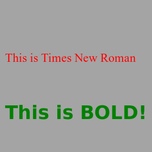

Font
Format
font fontname, point, weight
Description
Sets the font used by the text command to fontname. Size is defined in points (1/72") Weight represents a number from 1 to 100 that defines how dark the letters will be drawn. Light=25, Normal=50, and Bold=75.
Example
color grey
rect 0,0,graphwidth,graphheight
color red
font "Times New Roman",18,50
text 10,100,"This is Times New Roman"
color darkgreen
font "Tahoma",28,100
text 10,200,"This is BOLD!"
Will draw.

See Also
Text
New To Version
0.9.4